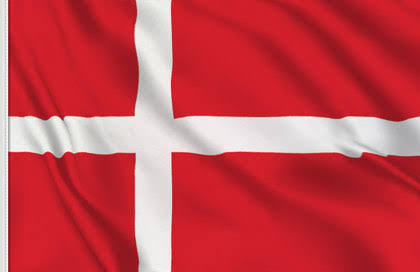

Dinamarca es un país escandinavo que abarca la península de Jutlandia y varias islas. Está conectado con Suecia a través del puente de Öresund. Copenhague, su capital, cuenta con palacios reales y el colorido puerto de Nyhavn, junto con el parque de atracciones Tívoli y la icónica estatua de "La Sirenita". Odense es la ciudad natal del escritor Hans Christian Andersen, con un centro medieval con calles de adoquines y casas con entramado de madera.

CARACTERISTICAS
Capital: Copenhague, una ciudad conocida por su diseño, arquitectura y calidad de vida.
Idioma: Danés, aunque el inglés es ampliamente hablado.
Moneda: Corona danesa (DKK).
Gobierno: Monarquía constitucional con un sistema de democracia parlamentaria.
Geografía: Un país escandinavo compuesto por Jutlandia y varias islas, con paisajes costeros y áreas rurales.
Clima: Templado marítimo, con inviernos suaves y veranos frescos, aunque lluviosos.
Economía: Fuerte en energías renovables, agricultura, industria y tecnología.
Cultura: Famosa por su tradición de diseño y arquitectura minimalista, así como por el concepto de hygge (comodidad y bienestar).
Bienestar: Alta calidad de vida, con un excelente sistema de salud y educación.
Felicidad: Dinamarca regularmente figura entre los países más felices del mundo, gracias a su equilibrio trabajo-vida y seguridad social.